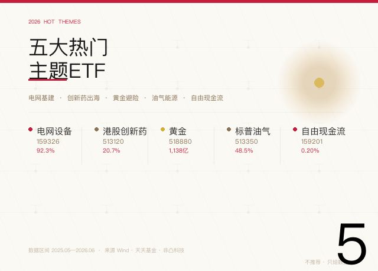
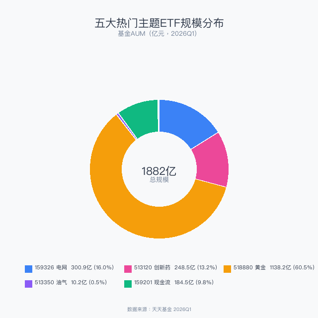
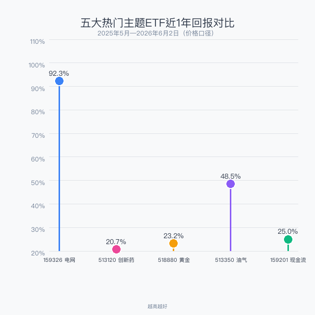
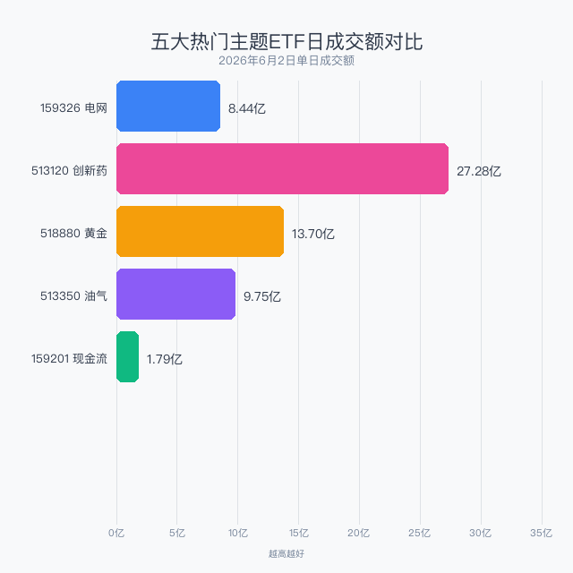

数据截止：2026年6月2日
数据来源：Wind、天天基金、非凸科技
不推荐任何产品，只说清楚每个主题在讲什么故事
你信哪个故事，自己决定

2026年的A股不是普涨行情，而是主题轮动的一年。电网基建、创新药出海、黄金避险、油气能源、自由现金流——五个主题，五套完全不同的投资逻辑。本文不是让你在「同主题的5只ETF里挑一只」，而是帮你理清这五个热门主题各自在讲什么故事、有没有道理、数据怎么样。
| 代码 | 主题 | AUM(亿) | 近1年回报 | 日成交(亿) | 年费率 |
|---|---|---|---|---|---|
| 159326 | 电网设备 | 300.87 | 92.3% | 8.44 | 0.60% |
| 513120 | 港股创新药 | 248.48 | 20.7% | 27.28 | 0.60% |
| 518880 | 黄金 | 1,138.16 | 23.2% | 13.70 | 0.60% |
| 513350 | 标普油气 | 10.18 | 48.5% | 9.75 | 0.60% |
| 159201 | 自由现金流 | 184.53 | 25.0% | 1.79 | 0.20% |

黄金ETF（518880）一只就占了五个主题总规模的60%——1138亿不是小数目，它是全市场最大的商品ETF，也是机构资产配置的压舱石。电网设备（300亿）和港股创新药（248亿）是第二梯队，自由现金流（185亿）作为2025年才诞生的新概念已初具规模，标普油气（10亿）体量最小。

电网设备以92.3%的近1年回报大幅领跑——这背后是国家电网"十四五"收官年的投资冲刺，特高压、智能电网、新能源消纳三重驱动。标普油气48.5%排第二，受益于中东地缘冲突推高油价。其余三个主题回报在20%-25%区间，相对温和。

港股创新药日成交27.28亿最活跃，黄金13.70亿、油气9.75亿紧随其后。自由现金流ETF日成交仅1.79亿，日常交易足够但大资金进出需注意。
代表ETF：159326 电网设备ETF华夏
故事很简单：2026年是"十四五"电网投资收官年，全年投资预计超6000亿。特高压、配电网改造、新能源消纳——钱砸下去了，设备公司订单排到了后年。从2亿成立规模膨胀到300亿AUM，年内规模增长260亿，全市场ETF增长冠军。
近1年回报92.3%证明了这个故事的含金量。风险在于：超级周期总有结束的一天，投资高峰过后能否继续高增长？
代表ETF：513120 港股创新药ETF广发
这个故事讲的是"卖管线"——中国创新药公司把自己研发的新药授权给全球大药企，收取首付款+里程碑付款+销售分成。2026Q1对外授权交易总金额突破600亿美元，国产占比75%。这不是概念炒作，是有真金白银进来的故事。
248亿AUM、日成交27亿，流动性无忧。但近1年回报仅20.7%，说明市场对医药板块整体偏谨慎。这是一个"相信长期逻辑、接受短期波动"的选择。
代表ETF：518880 黄金ETF华安
1138亿AUM说明一切——这是机构资金用真金白银投出的信任票。故事的核心：全球央行持续购金 + 地缘风险 + 去美元化趋势。黄金不是"进攻型"资产，它是组合的压舱石和保险单。
近1年回报23.2%，在五个主题中排名靠后但胜在稳定。如果你看好"全球乱局短期内不会结束"，黄金ETF是表达这个观点最直接的工具。
代表ETF：513350 标普油气ETF富国
跟踪S&P油气勘探指数，底层资产是美国上市的油气公司。中东冲突推高了全球油价，年内一度涨超73%（截至4月）。近期有所回落，近1年回报48.5%。
这是一个典型的事件驱动型主题——油价涨它就涨，冲突缓和它就跌。10亿AUM规模较小，适合"相信中东局势会继续升级"的短期博弈，不适合作为核心持仓。
代表ETF：159201 自由现金流ETF华夏
2025年2月才成立，一年多膨胀到185亿AUM——这是2025-2026年ETF市场增长最快的新概念。策略不是追热点，而是找"躺赚"的公司：经营现金流减去资本开支后，剩的钱最多的企业。本质上是"赚真钱"而不是"画大饼"。
费率仅0.20%，全市场最低档。近1年回报25%，不惊艳但很稳。如果你厌倦了AI、新能源的故事，只想找一些"不靠融资活着的公司"，这个ETF的逻辑可能是最对你胃口的。
| 电网 159326 | 创新药 513120 | 黄金 518880 | 油气 513350 | 现金流 159201 | |
|---|---|---|---|---|---|
| 核心逻辑 | 基建投资 | 出海授权 | 避险+央行购金 | 地缘冲突 | 赚真钱 |
| 波动性 | 中高 | 高 | 低 | 极高 | 中低 |
| 适合 | 追趋势 | 信长期 | 求稳健 | 博弹性 | 厌故事 |
| AUM | 301亿 | 248亿 | 1,138亿 | 10亿 | 185亿 |
| 近1年回报 | 92.3% | 20.7% | 23.2% | 48.5% | 25.0% |
| 日成交 | 8.44亿 | 27.28亿 | 13.70亿 | 9.75亿 | 1.79亿 |
最后一个问题帮你理清思路：你当前最担心的是什么？